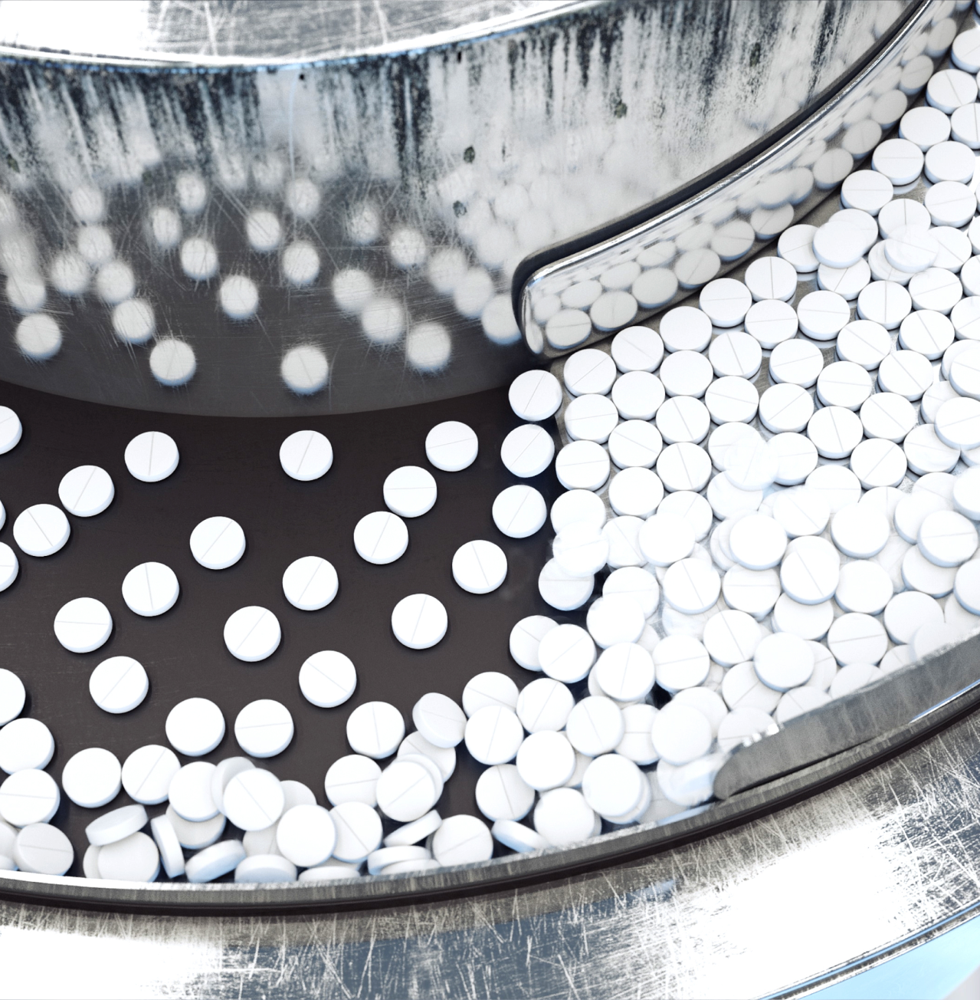
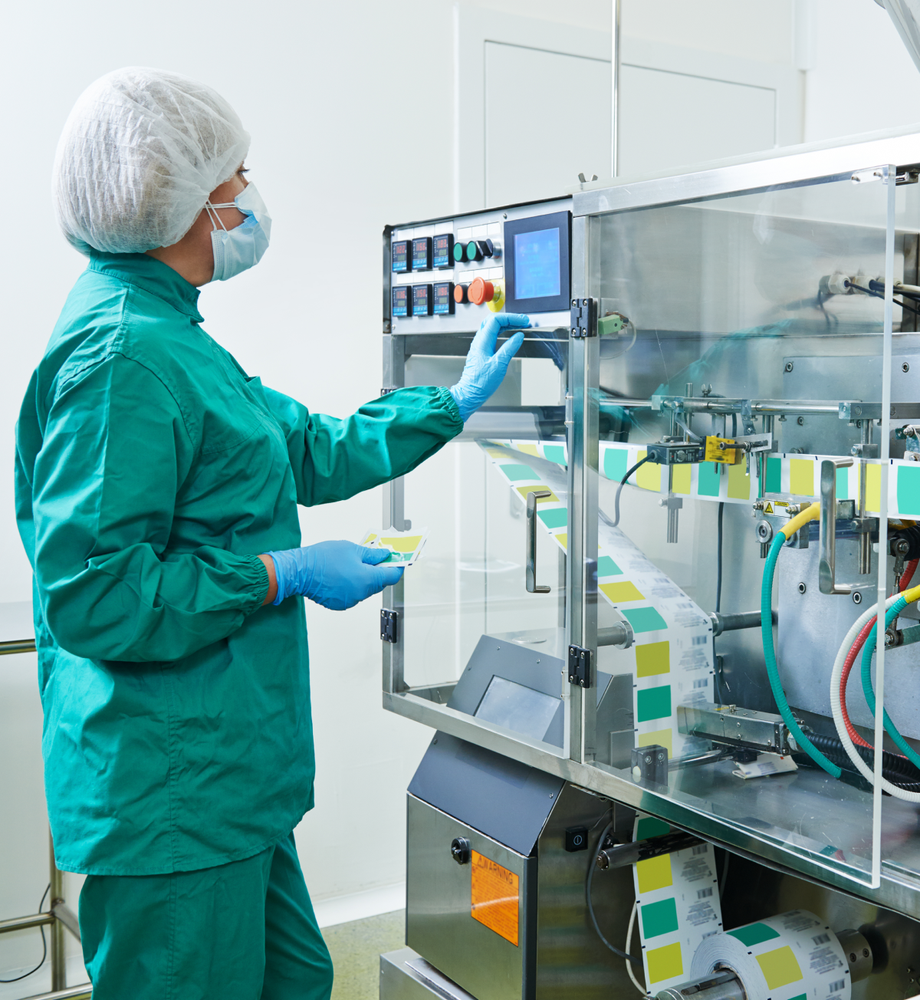
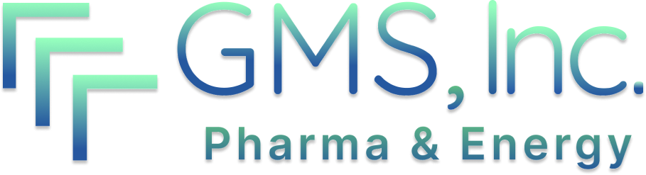
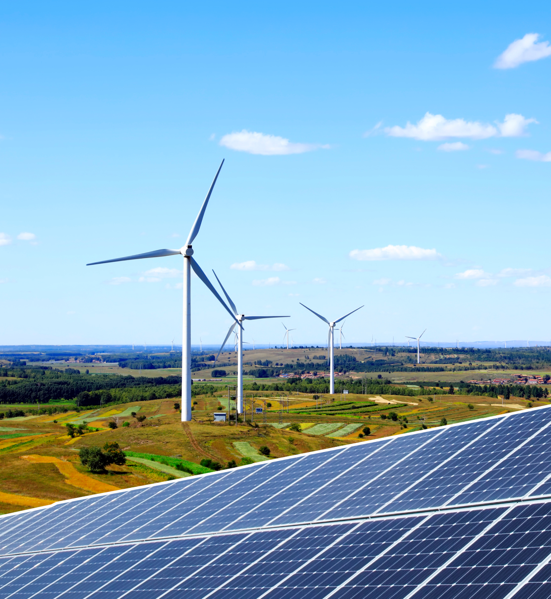

Crate-to-cradle assistance to set up a new Pharma, Nutra, Nutritional, or expansion of an existing set-up. Assistance on reducing the cost of operation
Coporate profile
Energy & Environmental Management. Cost reduction thru Energy audit of any industrial set-up besides Pharma

